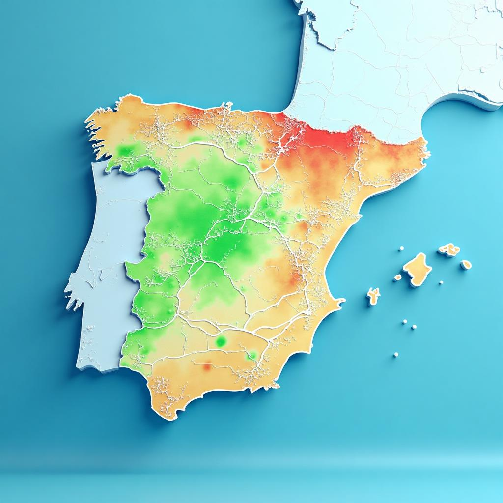

Conoce la calidad del aire de tu ciudad en tiempo real
con nuestra extensa red de sensores ambientales
Suscríbete
y comienza a recibir informes
personalizados de tu zona.

con nuestra extensa red de sensores ambientales
Suscríbete
y comienza a recibir informes
personalizados de tu zona.
Monitorea en tiempo real los principales contaminantes y protege tu salud
Contaminante secundario de emisiones vehiculares
Gas irritante formado por reacción de NOx y COVs bajo luz solar. Afecta al sistema respiratorio.
Combustión incompleta de combustibles fósiles
Gas incoloro e inodoro, altamente tóxico. Impide el transporte de oxígeno en la sangre.
Tráfico (motores diésel) e industria
Gas irritante pardo-rojizo. Reduce la función pulmonar y aumenta infecciones respiratorias.
Quema de combustibles con azufre
Gas con olor fuerte. Causa irritación respiratoria, especialmente peligroso para asmáticos.
Exhalación humana y combustión
Indicador de ventilación en interiores. Altas concentraciones causan fatiga y bajo rendimiento.
La exposición prolongada a niveles altos de contaminantes puede afectar gravemente tu salud respiratoria y cardiovascular. Cada contaminante actúa de manera diferente en tu organismo, desde irritaciones leves hasta daños pulmonares graves.